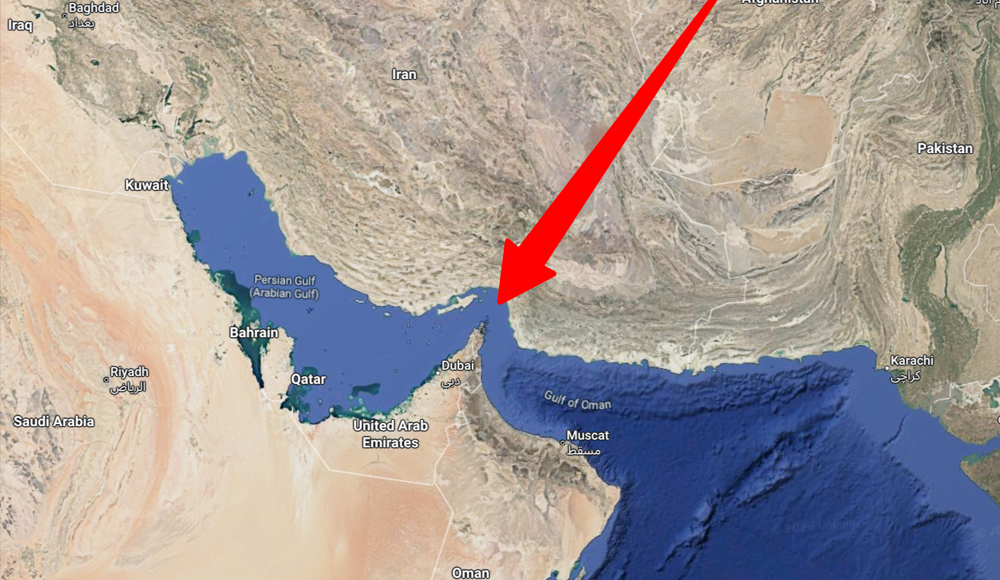

นี่เข้าวันที่ 3 ของปฏิบัติการโจมตีอิหร่านของอเมริกากับอิสราเอล วันแรก ผู้นำสูงสุดตาย เกลื่อนกล่นกับเจ้าหน้าที่ระดับสูงอีกหลายสิบคน ลูกเมียผู้นำก็ตายไปด้วย วันถัดมาอิหร่านยอมรับว่าผู้นำตาย มีการตั้งคนใหม่แทนทันที ต่อมาอีกไม่ถึง 24 ชั่วโมง บรรดาคนใหม่ๆ ที่ตั้ง ตายอีกเหมือนกัน คือเรียกว่า มันตั้งใครมา ไอ้พวกมะกัน + อิสราเอล ยิงจรวดใส่หมด สงครามยุคนี้เขาไม่ถือปืนไปเล็งไล่ยิงกันแล้ว มันยิงจรวดใส่ทั้งตึกเลย อยู่ใต้ดินก็ตายได้
สรุปว่า ฝุ่นคลุ้งควันโขมง ขณะนี้ในอิหร่านเหมือนเป็นสูญญากาศ พวกหัวๆโดนเด็ดไป ส่วนกำลังภาพพื้นดินยังทำงานอยู่ แต่ก็คิดว่า กระเสือกกระสนกันอยู่ บนท้องฟ้า ได้ยินว่าทางพวกนั้นคุมน่านฟ้าไว้หมด ว่างั้นนะ ยังไม่ได้เช็คข่าวละเอียด แต่สายว่างั้น เป็นอันว่า พวกทหารราบก็พยายามดิ้นๆ อยู่ ไม่รู้จะไปได้อีกกี่วัน แต่ทรัมป์บอกวันก่อนว่า อยู่ยาว คือโจมตียาวๆไป จนกว่าจะบรรลุเป้าหมาย ว่างั้น
เอ้ามาตามกันต่อไป แต่ตอนนี้ผลกระทบเริ่มเกิดไปทั่วโลก เนื่องจากพ่อเจ้าประคุณอิหร่านเขายิงจรวดไปพล่านหมด และไปทำลายฐานทัพของประเทศอังกฤษ ฝรั่งเศส อิตาลี เยอรมัน ที่อยู่ใกล้เคียงด้วย ประเทศรอบๆ ก็โดนแน่นอน เพราะมีฐานทัพอเมริกันตั้งอยู่ ยิงพล่านเลย ทีนี้เรื่องน่าจะบานปลาย ช่องแคบฮอร์มุซก็ปิด จะเผาเรือทุกลำ ว่างั้น แต่เห็นอเมริกาจมเรืออิหร่านในทะเลไปหมดเลย
เอ้า ติดตามต่อ วุ่นวายมาก โลก นี่ข่าวว่ากลางดึกเมื่อคืน ราคาน้ำมันปรับกันหลายบาทแล่ว มนุษย์นายกให้สัมภาษณ์บอก ไม่มีปัญหา ๆ เอาอยู่ ๆ แต่ว่าน้ำมันสำรองไทยอยู่ได้ประมาณ 2 เดือน ขณะนี้การส่งออกยังมีอยู่ ไม่ยอมกักไว้ก่อน ไม่รู้ว่าจะเอาอยู่จริงไหม แต่ราคาไม่อยู่แล้วล่ะ พ่อประคุณเอ้ย เฮ้อ
#อิหร่าน
-- Tue Mar 03 2026 10:33:47 GMT+0700 (Indochina Time) writer=@advisor1 postId=MTc3MjUwODgyNzM0OQ right=เผยแพร่ได้แต่ห้ามแก้ไข / Shareable but no edit